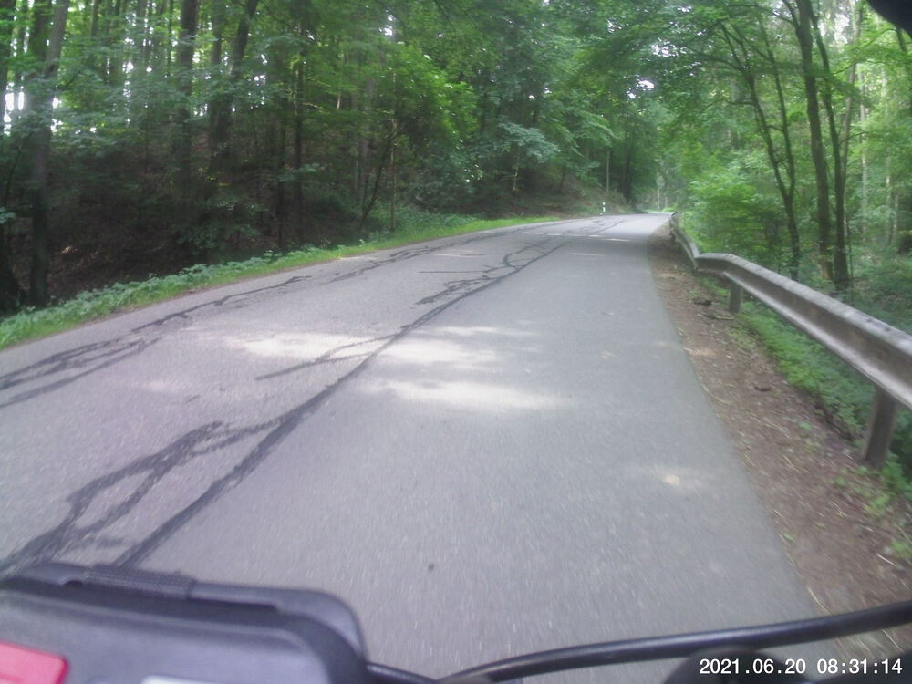
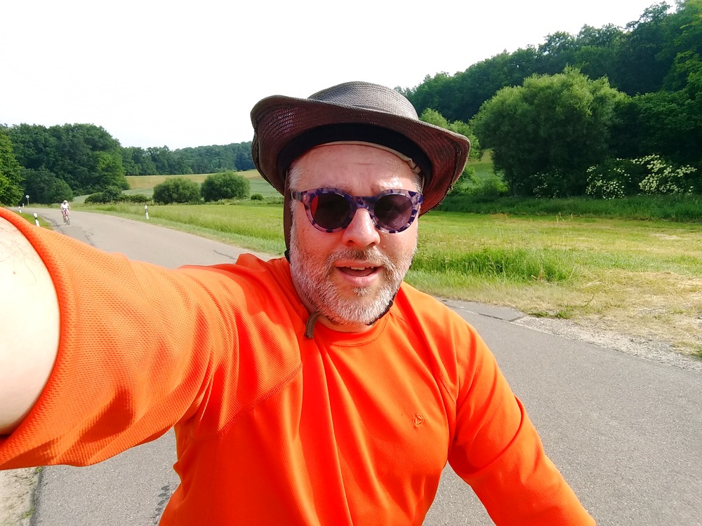
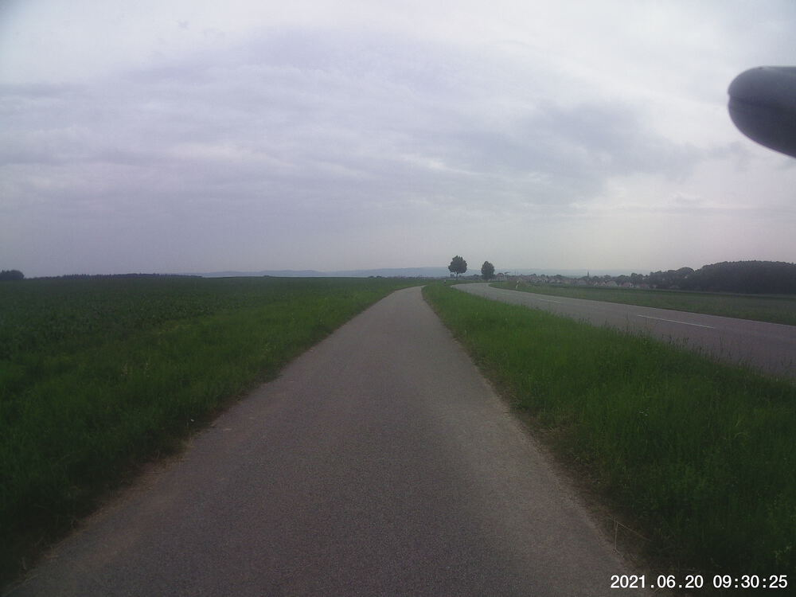
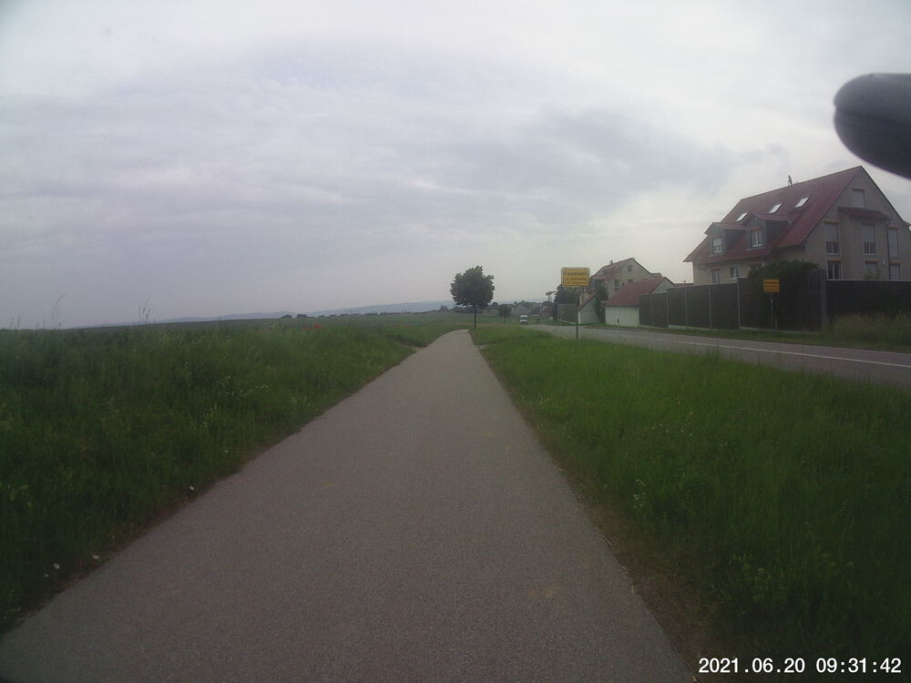
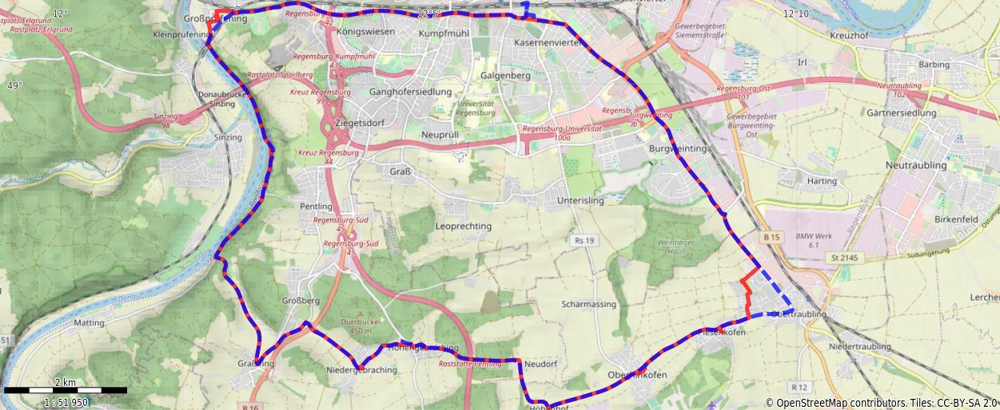

Jun 20, 2021
What’s with all the -ings around here, anyways?
I’ve ridden past zur Walba more times than I can count over the last year, and I’ve always looked up the hill on the cross street and shuddered at the thought of biking past it. Well, today, I bit the bullet and did it. It was long and slow, but much less steep than I imagined.
It was supposed to be 32 °C by noon today, so I made sure to get started before 8:00. By the time I was two-thirds of the way through my route, it looked like it was going to rain, and it actually felt cooler.




You might need to tap or click the map to make it bigger. The red solid route was my intention. The blue dashed route is my actual route.
Total Distance: 30 km
Time: 1:47
Calories: 1228
Calories from fat: 17 %
Average Heart Rate: 132
Maximum Heart Rate: 159
Fat Burn: 0:13
Fitness: 1:34